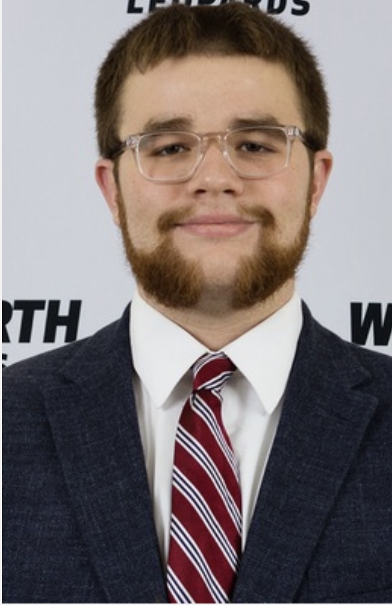
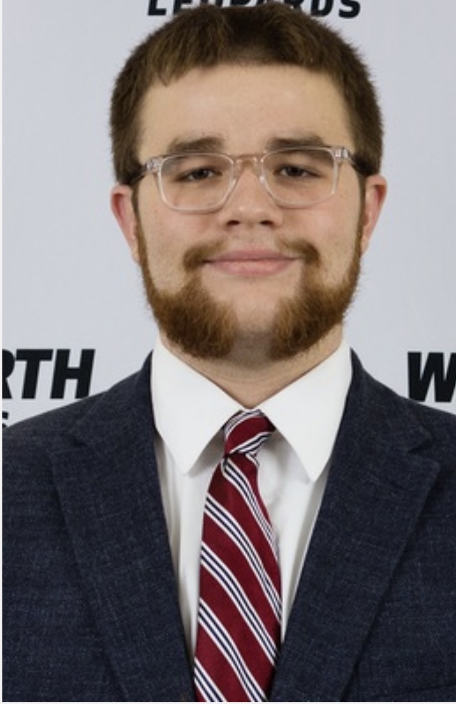
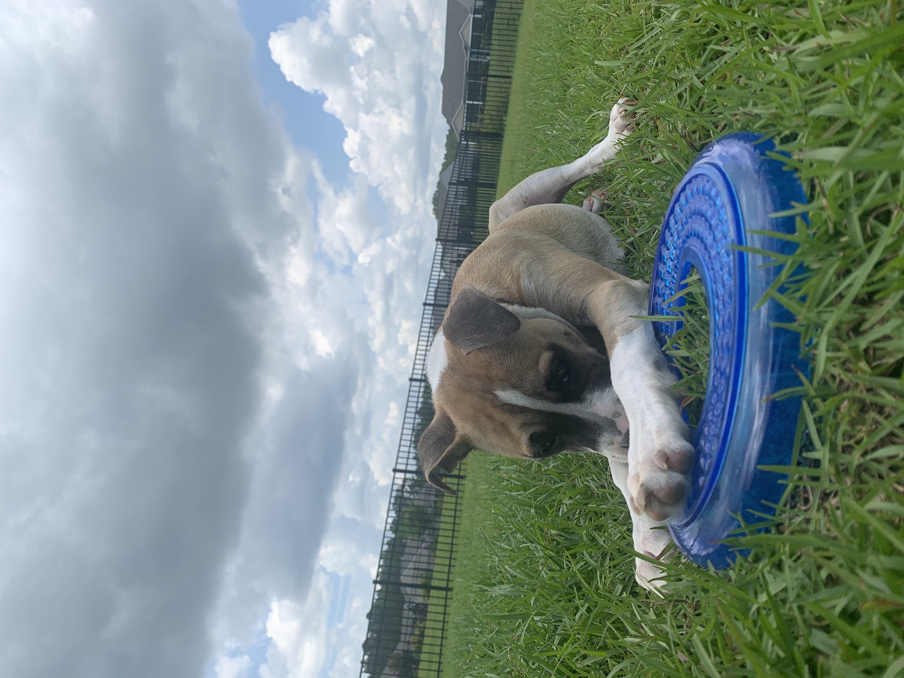
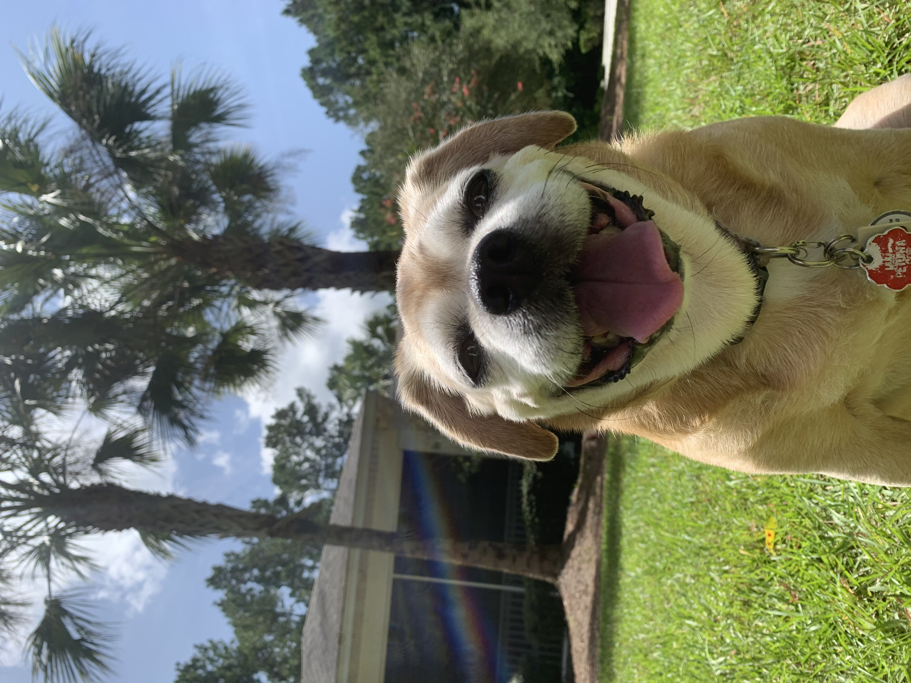
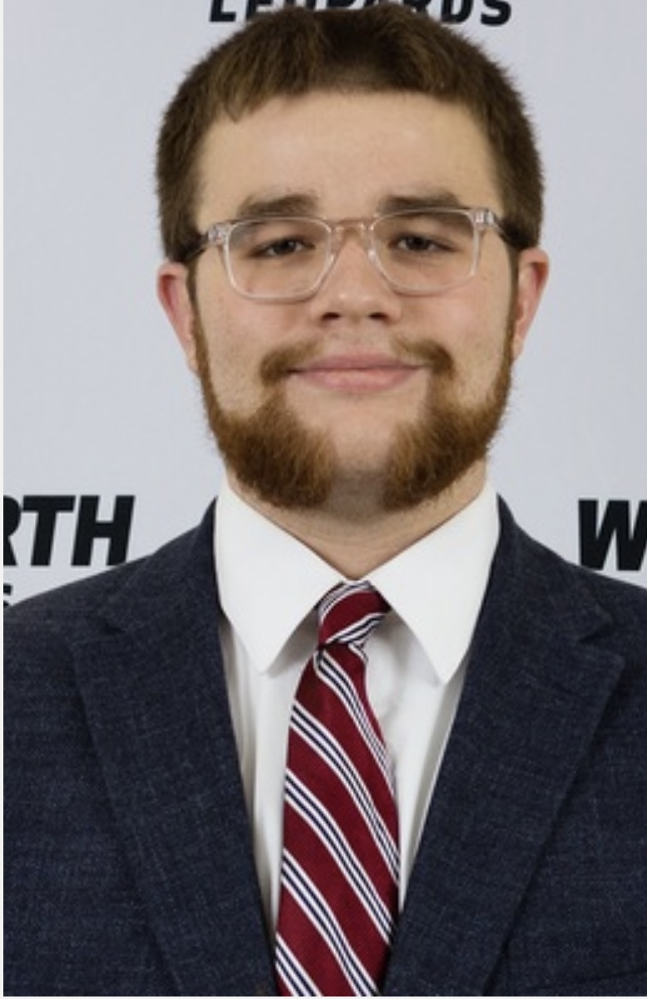

A little bit about me:
I grew up in Clinton, New Jersey and I've been playing lacrosse practically my entire life!
I was recruited to play goalie at Wentworth Institute of Technology in Boston, Massachusetts.
I'm majoring in Computer Science with a minor in the Applied Mathematics field and planning to
graduate in August 2021! My home could be considered as Bluffton, South Carolina, where my
parents live with my two dogs, Shayna and Stogie.


I started playing lacrosse when I was in first grade and just ended the final season of my career in May 2021. I started playing as attack/middie and then switched to goalie in fifth grade, which I have been playing ever since. Shown below are are my college roster pictures from freshman-senior year (Clearly I do not mess around come picture day).



Prior to entering high school, I gained a passion for computers. I used to host my own
Minecraft server from home around the age of 12 and actually made about $20 from player donations!
This was the "push" for me deciding that I wanted to study computer science in college.
I have 3 siblings and I am an uncle to four niblings (neices and nephews). I love each and every one of them with
my whole heart. Wyatt & Maddie live in California with my sister, Kelly, and her husband, Jake. Liam & Olivia
live in Massachusetts with my brother, Luke, and his wife, Liz.


My nephew, Liam, is 7 years old and has been battling a rare auto-immune disease called Juvenile Dermatomyositis (JDM). His website is linked here, along with the Cure JM website. These websites are very informative on what this disease is all about. Liam is my oldest nephew and I am closer in age with him than I am with my brother, his father.